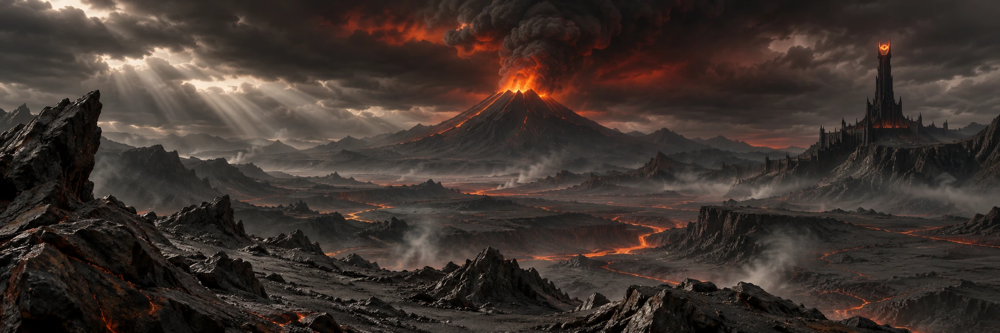

Panoramas de la Terre du Milieu
Ouvrez un paysage pour en examiner les détails. Ces six illustrations accompagnent les lieux et les voyages de l’atlas ARDA.

Activer la carte interactive
Les géométries des trois âges se préparent sur votre ordinateur. Depuis le dossier du projet, installez les dépendances Python puis indiquez le chemin de votre copie des couches Arda Maps.
python -m pip install Pillow numpy scipy
python import_maps.py /chemin/vers/Arda-Maps
python prepare.py
python build_leather.py